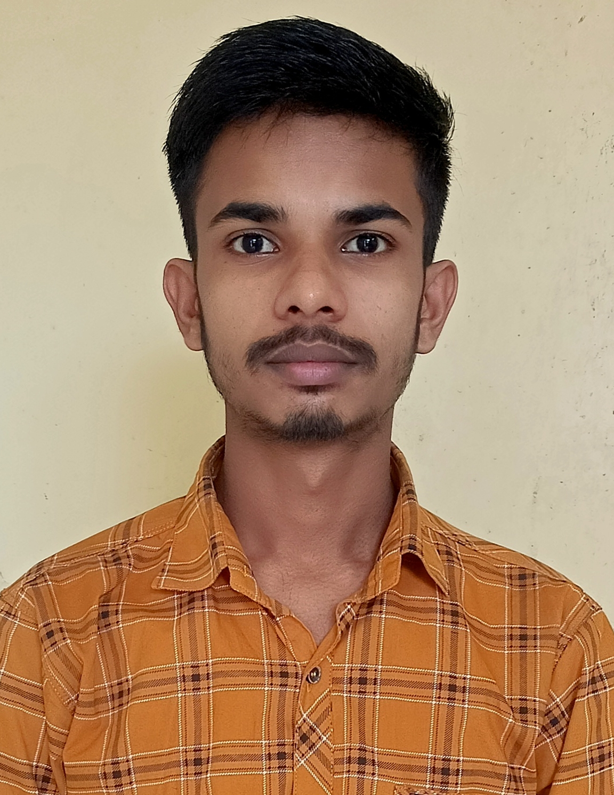

Chandra Kishor Mandal

ACADEMIC DETAILS
- completed my 10th from The Ramakrishna Vivekananda Vidya Mandir Jasidih, Deoghar. And got 93.6 percent marks (2017-18)
- Completed my 12th from RamSundar High School Rampur, bhagalpur. And scored 84.6 marks in exam. (2019-20)
- Currently persuing my b tech degree in industrial and production engineering at NIT Jalandhar. My current CGPA is 7.6.
SCHOLASTIC ACHIEVEMENTS
5th International Olympiad of Science :
-
Secured 397 state rank and achieved 9380 international rank.
CBSE Certificate of merit :
-
Got certificate of merit for outstanding academic performance and for being among the top 0.1 percent of
successful candidates in science.
NDA:
-
Received call up letter for SSB interview.
TECHNICAL SKILLS
-
Languages:
-
Software:
-
Relevant Course:
- DSA(Data Structures and Algorithms)
WORK EXPERIENCE
-
AdsCamponline(Startup):
- Part of core committee member in AdsCamponline for more than 1.5 years
- Conducted regular team meeting to track project progress, discuss strategies and address any challenges or
concern.
AREA OF INTEREST
- Industrial engineering
- Software development
- Manufacturing industries
EXTRA CURRICULAR ACTIVITIES
-
Logo making competition( conducted by team technical affairs ):
- Secured first position and designed logo was selected as an official logo of team technical affairs.
-
ATV Design(All-Terrain Vehicle ):
- Worked in design team of Avishkar Club.
- Learned the software Catia V5, designed and assembled parts of ATV on Software.
-
CBSE Inter School Football Tournament:
- Represented school in this tournament.
- Finished second in tournament.
OTHER
© Chandra Kishor. All rights reserved